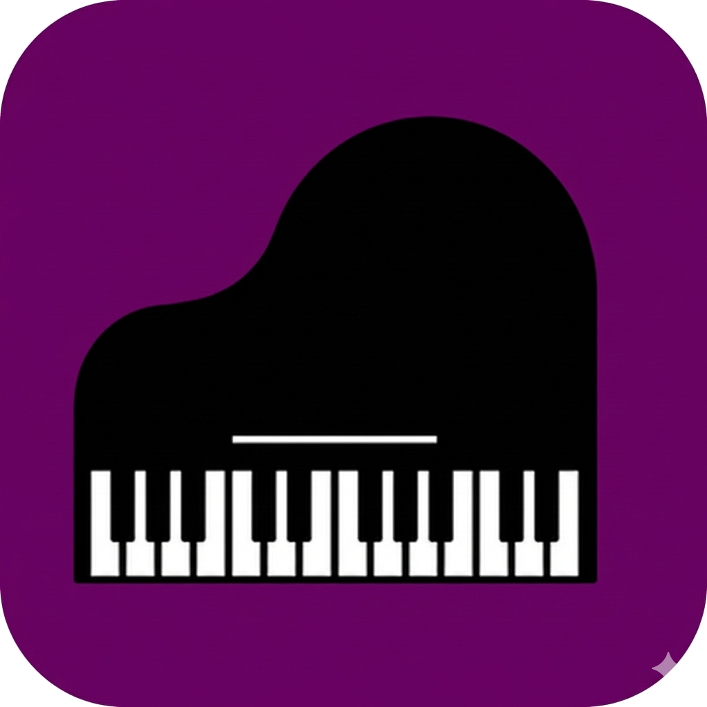
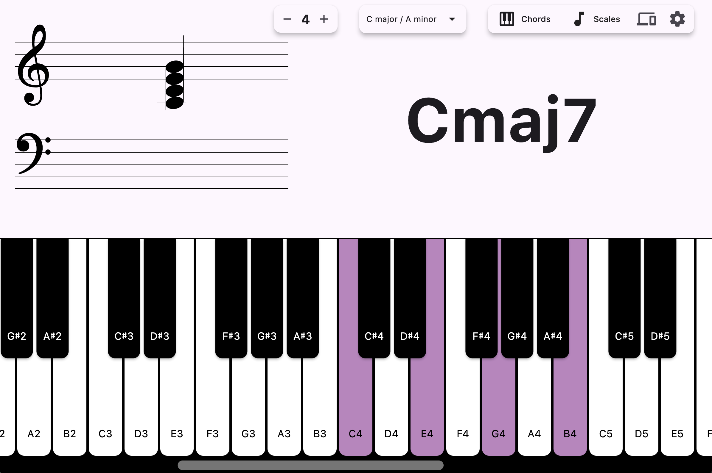
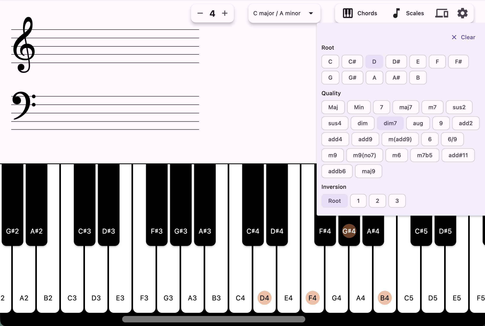
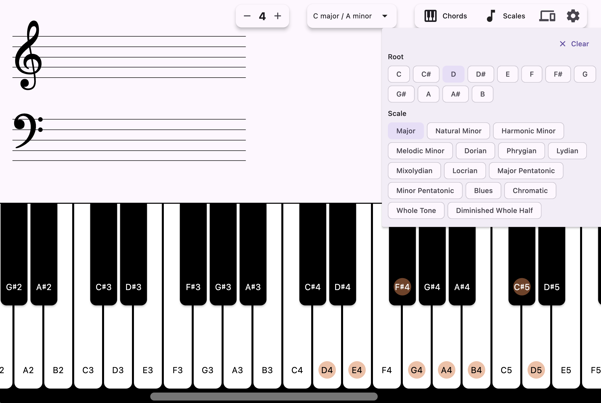
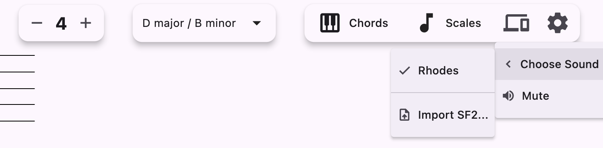

Cmaj7
Real time chord detection
Play anything and the chord name appears immediately — triads, sevenths, extensions, suspensions and altered voicings.

ChordLensChordLens listens to your keyboard — hardware MIDI, your computer keys, or the on-screen piano — and names the chord instantly, right above a live grand staff.

No menus to dig through while your hands are on the keys.
Play anything and the chord name appears immediately — triads, sevenths, extensions, suspensions and altered voicings.
Every pressed note is notated on treble and bass clefs, respecting the key signature you select.
Connect a MIDI keyboard and ChordLens auto-connects to the first available device. Or use the computer keyboard mapping.
Pick a chord or scale from the menu and the matching keys light up across the keyboard — great for practice.
Ships with a Rhodes SF2, loads your own SoundFont files, and has a mute mode when you only want the analysis.
Z S X D C V G B H N J M , L . ; / plays the octave, [ and ] shift it up and down.
Click or tap the keys — or use your computer keyboard, just like in the app.
A simplified taste of the real thing. The app detects far more chord types, on a full 88-key range.
Chords, scales and settings — all a tap away.



Always the latest release, straight from GitHub.
xattr -dr com.apple.quarantine /Applications/ChordLens.app.
Prefer to build it yourself? Clone the repo, run flutter pub get, then
flutter run -d macos|windows|android. Requires a Flutter SDK compatible with Dart 3.9.